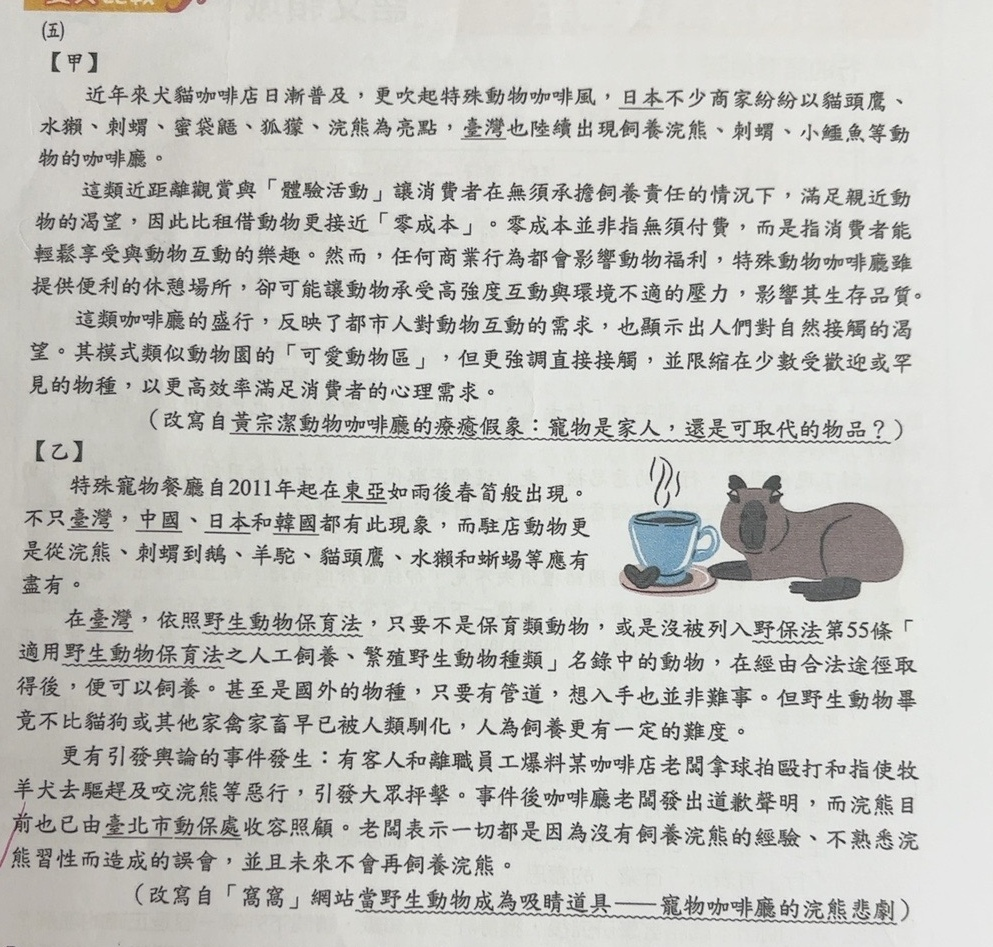
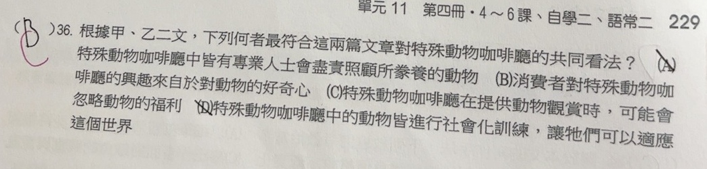

分享原卷｜第36題
完整原題
作答所需文章／材料
【甲】 近年來犬貓咖啡店日漸普及，更吹起特殊動物咖啡風，日本不少商家紛紛以貓頭鷹、水獺、刺蝟、蜜袋鼯、狐獴、浣熊為亮點，臺灣也陸續出現飼養浣熊、刺蝟、小鱷魚等動物的咖啡廳。 這類近距離觀賞與「體驗活動」讓消費者在無須承擔飼養責任的情況下，滿足親近動物的渴望，因此比租借動物更接近「零成本」。零成本並非指無須付費，而是指消費者能輕鬆享受與動物互動的樂趣。然而，任何商業行為都會影響動物福利，特殊動物咖啡廳雖提供便利的休憩場所，卻可能讓動物承受高強度互動與環境不適的壓力，影響其生存品質。 這類咖啡廳的盛行，反映了都市人對動物互動的需求，也顯示出人們對自然接觸的渴望。其模式類似動物園的「可愛動物區」，但更強調直接接觸，並限縮在少數受歡迎或罕見的物種，以更高效率滿足消費者的心理需求。 （改寫自黃宗潔〈動物咖啡廳的療癒假象：寵物是家人，還是可取代的物品？〉） 【乙】 特殊寵物餐廳自2011年起在東亞如雨後春筍般出現。不只臺灣，中國、日本和韓國都有此現象，而駐店動物更是從浣熊、刺蝟到鵝、羊駝、貓頭鷹、水獺和蜥蜴等應有盡有。 在臺灣，依照野生動物保育法，只要不是保育類動物，或是沒被列入野保法第55條「適用野生動物保育法之人工飼養、繁殖野生動物種類」名錄中的動物，在經由合法途徑取得後，便可以飼養。甚至是國外的物種，只要有管道，想入手也並非難事。但野生動物畢竟不比貓狗或其他家禽家畜早已被人類馴化，人為飼養更有一定的難度。 更有引發輿論的事件發生：有客人和離職員工爆料某咖啡店老闆拿球拍毆打和指使牧羊犬去驅趕及咬浣熊等惡行，引發大眾抨擊。事件後咖啡廳老闆發出道歉聲明，而浣熊目前也已由臺北市動保處收容照顧。老闆表示一切都是因為沒有飼養浣熊的經驗、不熟悉浣熊習性而造成的誤會，並且未來不會再飼養浣熊。 （改寫自「窩窩」網站〈當野生動物成為吸睛道具——寵物咖啡廳的浣熊悲劇〉）根據甲、乙二文，下列何者最符合這兩篇文章對特殊動物咖啡廳的共同看法？
(A) 特殊動物咖啡廳中皆有專業人士會盡責照顧所豢養的動物
(B) 消費者對特殊動物咖啡廳的興趣來自於對動物的好奇心
(C) 特殊動物咖啡廳在提供動物觀賞時，可能會忽略動物的福利
(D) 特殊動物咖啡廳中的動物皆進行社會化訓練，讓牠們可以適應這個世界
先想一想，再查看答案、解說與原圖
原卷作答：原卷藍筆B，紅筆訂正C；使用者記錄B→C。
(C) 特殊動物咖啡廳在提供動物觀賞時，可能會忽略動物的福利
逐項解析
| 選項與原句 | 判讀 | 句意與判斷理由 |
|---|---|---|
| (A) 特殊動物咖啡廳中皆有專業人士會盡責照顧所豢養的動物 | 不選 | 兩文並未支持所有店家都有專業人員盡責照顧；乙文有反例。 |
| (B) 消費者對特殊動物咖啡廳的興趣來自於對動物的好奇心 | 不選 | 好奇心未成為甲、乙共同明確支持的興趣來源。 |
| (C) 特殊動物咖啡廳在提供動物觀賞時，可能會忽略動物的福利 | 應選 | 甲文談互動壓力，乙文談不當飼養，均指出動物福利可能受忽略。 |
| (D) 特殊動物咖啡廳中的動物皆進行社會化訓練，讓牠們可以適應這個世界 | 不選 | 兩文未說所有動物都接受社會化訓練。 |
詳細說明與解題步驟
本題要找甲、乙兩文都有支持的看法，不能只憑生活經驗，或只找到其中一文的證據。
甲文指出，近距離互動與不適合的環境可能使動物承受壓力、影響生存品質；乙文則以浣熊遭不當對待，以及野生動物飼養困難的事件說明風險。兩篇共同關切的是：在滿足消費者觀賞、互動需求時，動物福利可能被忽略，因此選C。C使用「可能」，也符合甲文的條件語氣，並未斷言所有店家都虐待動物。
A的「皆有專業人士會盡責照顧」無法由兩文成立，乙文更呈現缺乏飼養經驗及不當對待的案例。B雖看似合理，甲文也提到親近動物的渴望，但兩文未共同把消費者興趣的原因歸結為「好奇心」，不能當作共同看法。D加入兩文沒有提出的「皆進行社會化訓練」，也不能成立。
閱讀文章中的法規、事件現況均按原卷材料保留，作為本題文本；本題只要求比較兩文觀點。
核對註記：已實開真正上傳原卷與本題裁切成品，核對完整題幹、全部選項、必要材料及解說。未提供實際考試日期，日期採本題首次使用者訊息（台灣時間）；無可確認冊次、章節證據，歸綜合。
原圖（僅本題）

